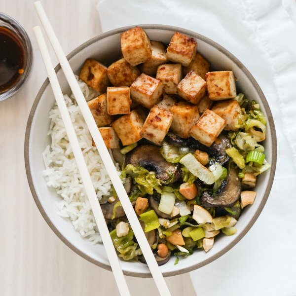

Spicy Ginger-Soy Rice Bowl with Tofu, Mushrooms & Brussels Sprouts

Nutrition (per serving)
673.2 kcalCalories
33.4 gProtein
75.7 gCarbs
30.6 gFat
Full nutrition table
| Calories | 673.2 kcal |
| Total fat | 30.6 g |
| Saturated fat | 4.4 g |
| Trans fat | 0 g |
| Cholesterol | 0 mg |
| Sodium | 66.4 mg |
| Carbohydrates | 75.7 g |
| Fiber | 8.6 g |
| Sugars | 12.4 g |
| Protein | 33.4 g |
| Potassium | 1639.8 mg |
| Calcium | 433 mg |
| Iron | 9.8 mg |
| Vitamin A | 928.4 IU |
| Vitamin C | 104.6 mg |
| Vitamin D | 3.4 IU |
Cookware
Ingredients
- 1 lbBrussels sprouts
- ½ cupcashews, roasted unsalted
- 1 lbcremini mushrooms
- 2 (12 oz) pkgextra firm tofu
- 2 (1 inch) piecesginger root
- 1 cupjasmine rice
- 2leeks
- chili-garlic sauce
- pure maple syrup
- salt
- soy sauce
- toasted sesame oil
Steps
- Preheat oven to 450°F.
- Cut tofu in half along the long side. Sandwich tofu between clean towels or paper towels and place on a baking sheet pan. Place a cutting board with something heavy on top and set aside to press out excess water.2 (12 oz) pkg extra firm tofu
- Using a strainer or colander, rinse the rice under cold, running water, then drain and transfer to a medium saucepan. Add water and bring the mixture to a boil over high heat.1 cup jasmine rice
2 cup water - Once the liquid comes to a boil, stir the mixture, cover the saucepan, and reduce heat to low. Cook rice until liquid is fully absorbed, 15-18 minutes. Once done, remove rice from the heat and let it stand, still covered, for 5 minutes.
- Meanwhile, wash and dry the fresh produce.2 (1 inch) pieces ginger root
1 lb Brussels sprouts
1 lb cremini mushrooms
2 leeks - Peel and mince ginger. Place in a medium bowl along with soy sauce, chili-garlic sauce, oil, and maple syrup. Whisk to combine the marinade. Transfer half of the marinade to a small bowl and set aside for serving.½ cup soy sauce
3 tbsp chili-garlic sauce
2 tbsp toasted sesame oil
1 tbsp pure maple syrup - Medium dice tofu, add to the medium bowl with the marinade, and gently stir to coat. Set aside. (Wipe baking sheet dry with paper towels and reserve for later use.)
- Trim and thinly slice Brussels sprouts crosswise. Transfer to a large baking sheet pan.
- Thinly slice mushrooms and add to the baking sheet with the Brussels sprouts.
- Trim off root ends and dark green tops of the leeks, leaving only the white and pale green parts. Cut leeks in half lengthwise and rinse under running water, separating the layers to remove any dirt and grit. Slice crosswise into ¼-inch thick pieces. Add to the baking sheet.
- Drizzle veggies with oil and season with salt. Toss to combine, then spread out in an even layer.4 tsp toasted sesame oil
½ tsp salt - Transfer tofu to the reserved baking sheet and spread out in an even layer. Drizzle with any leftover marinade in the bowl.
- Place baking sheets in the oven and roast, stirring halfway through, until veggies are tender and tofu is golden, 20-25 minutes.
- Meanwhile, roughly chop cashews.½ cup cashews, roasted unsalted
- When the veggies and tofu are done, remove from the oven. Sprinkle cashews over veggies and toss to combine.
- To serve, divide rice, tofu, and veggies between plates or bowls; drizzle with remaining marinade. Enjoy!